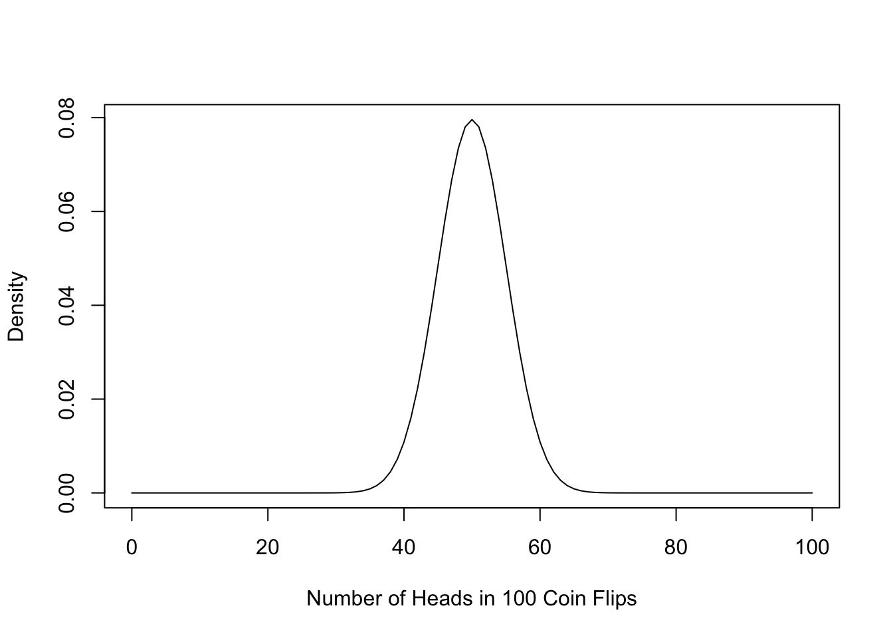
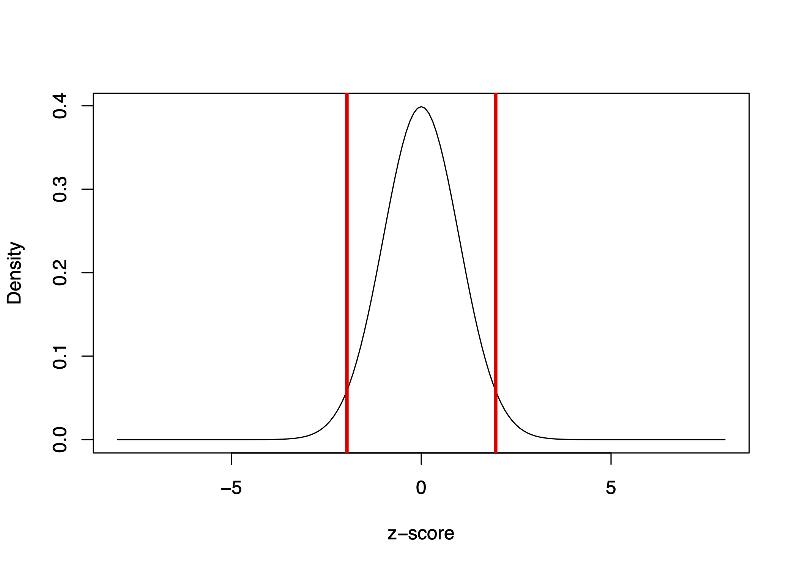
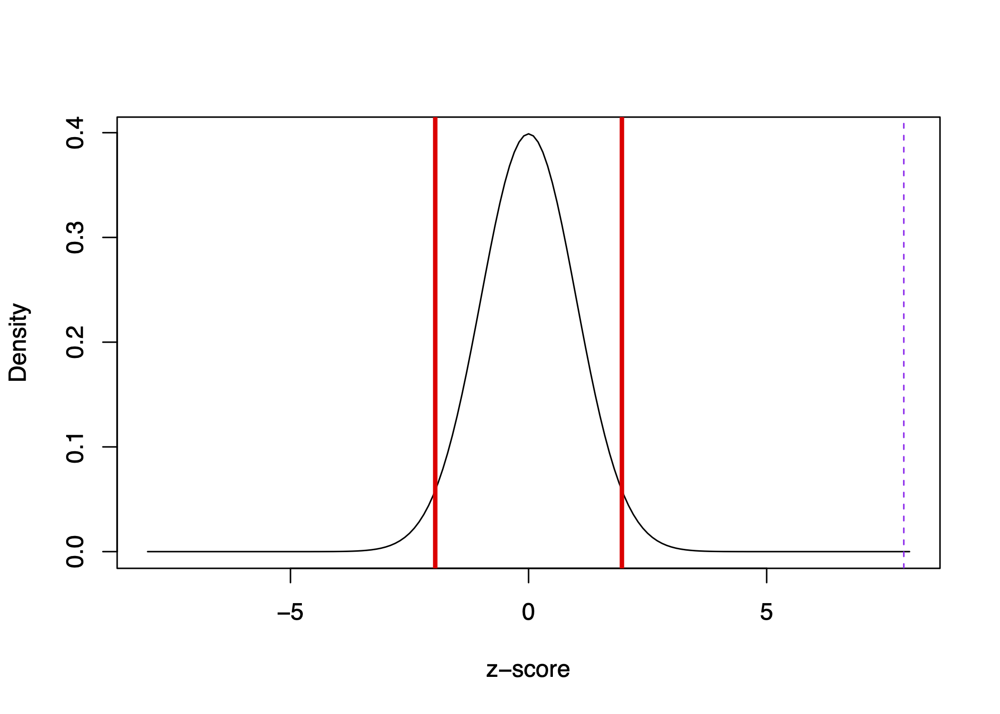
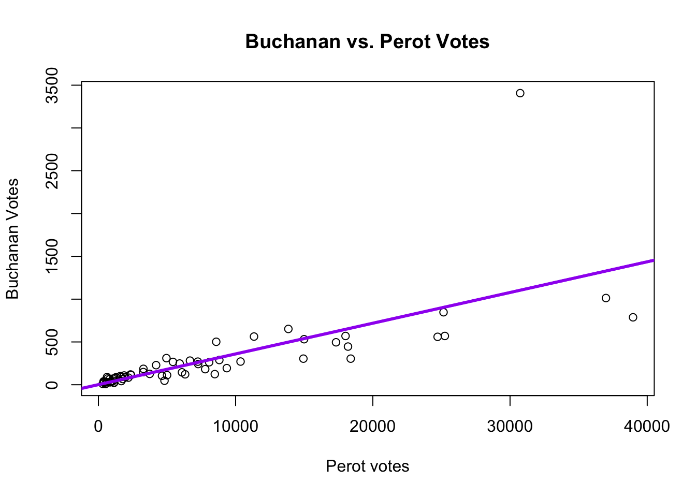

10 Uncertainty
In this section, we bring in some statistical concepts of uncertainty in data analysis.
Throughout the course, we have come up with estimates:
Are perceived black job applicants less likely to receive call backs for interviews than applicants perceived as white?
Are job applicants with criminal records less likely to receive call backs for interviews than applicants without criminal records?
Are higher levels of education associated with lower levels of tolerance toward domestic violence?
Do wind turbines cause backlash in voting behavior?
Each time, we come up with a positive or negative number to summarize the effect. But when should we consider it a reliable effect or big effect? By what criteria? That’s where we are going now.
10.1 Hypothesis Testing Overview of Process
Process for Hypothesis Testing
- Start with a research question: Are job applicants with criminal records less likely to receive call backs for interviews than applicants without criminal records?
- Develop a theory of how the world works
- E.g., “Job prospects are, in part, a function of someone’s criminal record.”
- Construct “null” and “alternative” hypotheses
- E.g., \(H_o\): “Applicants with a criminal record will receive call backs at similar rates as those without a criminal record” (I.e., no difference)
- E.g., \(H_A\): “Applicants with a criminal record will be less likely to receive call backs than those without a criminal record” or “Applicants with a criminal record will receive call backs at different rates than those without a criminal record” (I.e., some nonzero difference)
Example of Implied Framework
Health Savings Experiment (Dupas and Robinson 2013): Researchers conducted a field experiment in rural Kenya in which they randomly varied access to four innovative saving technologies and observed the impact on asset accumulation. Participants who were given a box locked with a padlock and key saved about 150 Kenyan Shillings more after 12 months relative to those who were simply encouraged to save money for health. Did the lock box work?
- What are the implied null and alternative hypotheses?
Process for Hypothesis Testing
- Carry out a test of the hypothesis, such as a difference-in-means.
- Applicants with a criminal record receive 12.5 percentage points fewer call backs than those without a criminal record
- Calculate the uncertainty around this estimate.
- Decide whether you can reject or fail to reject the hypothesis of no difference
10.2 Sampling and Uncertainty
Flip a coin 10 times here. Report how many times it lands on heads.
- Imagine repeating this process over and over again.
- We know that a fair coin should land on heads 50% of the time- 5 out of 10 times or 50 out of 100 times.
- However, in any given sample of coin flips, you might get a slightly different result. If you repeated the sample a bunch of times, sometimes you might get 4 heads, 5 heads, 6 heads, 3 heads, etc.
This does not mean the coin is unfair. Instead, just due to chance, we ended up with 6 out of 10 heads in a world where the true proportion of times that coin would land on heads is .5.
How much evidence would we need to reject the idea that the coin is unfair? What if we got 90 heads out of 100 coin flips? Would that be enough to make us skeptical of the coin?
- This is the idea of null hypothesis testing. We gather evidence and make a judgment about whether we can reject a null hypothesis. How likely would it be that by chance we could flip 90 heads in a world where that coin was actually fair?
- For example, when we find a relationship between two variables (e.g., a correlation, a difference-in-means, a regression coefficient), this could be due to chance in a single sample.
When we conduct an experiment and find that applicants with a criminal record were called back 12.5 percentage points less often than those without a criminal record, we want to know…
- Is that a real difference, or is the real difference 0, and we just happened to get our 12.5-point difference in our sample due to chance?
In statistical hypothesis testing, what we will try to do is quantify how likely it is that we could observe a difference as big as 12.5 in a given sample if, in fact, the real difference is 0. We want to be able to make a judgment about how likely the relationship we observed in a sample of applications/hiring decisions could exist in a world where criminal records really have no impact on job prospects.
We are going to use this example help us break down a few concepts.
10.2.1 Sampling Distribution
The number of heads you generate over repeated samples is the “sampling distribution.”
The higher the curve, the more likely we would observe that number of heads. For example, if you flip a coin 100 times, it is likely you will get close to 50 heads (50%), and very unlikely you will flip more than 80 heads (80% heads).
- So if you flip a coin and get 55 heads, we might still think the coin is fair, but once you start moving to the tails of this curve . . .
- It is highly unlikely we could flip a coin 100 times and get 80 heads just by random chance i.e., if the coin were fair.
- The “bell” shape of this distribution isn’t an anomaly. The “Central Limit Theorem” tells us that over repeated samples (so long as your sample is sufficiently large), the distribution of “means” will be normal
- This is incredibly important because we know a lot about normal distributions, such as that 95% of the sample mean estimates fall within two (technically: 1.96) standard errors of the mean.
- Only if we observe a number of heads outside those lines would we think perhaps it is not a fair coin.
Let’s now imagine our study on criminal records and job prospects. In a world where the true difference in call back rates between those with and without criminal records is 0, in any given sample, we might end up with a 3 percentage point difference, -5 percentage point difference, 2 point difference, -1 point difference, and so on.
- The shape of the bell curve would be centered on 0 difference (Central Limit Theorem), meaning on average, over repeated samples of applicants/hiring decisions, there would be 0 difference, but occasionally we would still find some differences across samples.
- What we want to know is if a 12.5 point difference is within two standard errors of 0 or if it is pretty unusual. (Is it more like 55 heads or 80 heads?)
10.2.1.1 Details: Standard Errors
A standard error is the standard deviation of the sampling distribution
- Where a standard deviation is the typical distance between a given observation and the mean.
- Compare the two photos below showing 0 standard deviation vs. a large standard deviation


From the Cartoon Guide to Statistics
In real life studies, we don’t know the actual sampling distribution because we only have 1 sample (we only had one study of applications/hiring decisions).
So we estimate our standard error using the standard deviation of our sample (\(S\)) and sample size (\(N\)).
\({\hat {SE}} = \frac{S}{\sqrt{N}}\)
The bigger the sample, the SMALLER the standard error (which is good) because it means less uncertainty.
10.3 Z-scores and p-values
Recall the Overview of Hypothesis Testing. Now, we are going to add details to help us make a final decision about the null hypothesis.
- Carry out a test of the hypothesis, such as a difference-in-means.
- Applicants with a criminal record receive 12.5 percentage points fewer call backs than those without a criminal record
- Calculate the uncertainty around this estimate.
- We will estimate the standard error of the estimate using the sample size and sample spread (standard deviation)
- We can also estimate the confidence intervals
- Decide whether you can reject or fail to reject the hypothesis of no difference
- Standarize the estimate and find the z-score (or t-statistic, which is similar)
- The z score is an example of a “test statistic.” The type of statistic might vary across applications, but its purpose will remain similar. Others include t-statistics and Chi-squared statistics.
- How likely is it you would observe the z-score you found under this null distribution? (p-value)
- If the p-value is small (\(< 0.05\)), reject the null.
- Standarize the estimate and find the z-score (or t-statistic, which is similar)
A z-score helps us standardize the size of estimates across any units of study by quantifying the size of the estimate in terms of standard errors.
z-score = \(\frac{\text{Estimate - Null}}{\hat{SE}} = \frac{\text{Estimate - 0}}{\hat{SE}}\)
The z-score represents a ratio of the estimate over the standard errors. We can visualize the distribution of z-scores in the image below.

The bell curve is centered on 0 and represents our null distribution.
- Instead of the axis being the number of heads out of 100 coin flips, centered on the null hypothesis of 50 heads for a fair coin, the standardized scale is centered on 0. We can then visualize how far 80 coin flips is away from 50 in terms of standard errors.
Recall, we asked: When we conduct an experiment and find that applicants with a criminal record were called back 12.5 percentage points less often than those without a criminal record, we want to know…
- Is that a real difference, or is the real difference 0, and we just happened to get our 12.5-point difference in our sample due to random chance?
It so happens that our 12.5 percentage difference represents more than z=7.
We can visualize where z=7 is in our distribution below with the dashed purple line:

It is well outside of the red lines representing 1.96 standard errors.
Interpretation: It is really unlikely we would have observed this extreme in magnitude of difference if the true difference were 0.
- This likelihood represents the p-value, which is essentially 0 in this case. There is essentially 0 chance we would have observed a difference as large or larger than 12.5 (or -12.5) in a world where the true difference is 0.
- If a p-value is < 0.05, we reject the null hypothesis.
- If instead, the p-value is larger than 0.05, we fail to reject the null. That would mean that we think it is reasonably possible to have observed a difference as big as 12.5 if in fact the true difference is 0.
We are going to focus on two-sided p-values, which focus on the magnitude of the z-score in either direction, instead of whether it is a positive or negative p-value. In other classes, you may also cover one-sided p-values.
10.3.1 Relationship to Confidence Intervals
Relationship to Confidence Intervals: Our 12.5 percentage difference has a 95% confidence interval of 6.8 to 18.3
- It is constructed by taking \(12.5 - 1.96*SE\) and \(12.5 + 1.96*SE\)
- This means there is a 95% chance that this interval contains the true population difference.
It gives us another way of describing our estimate that includes our uncertainty. We recognize that over repeated samples, we are not always going to get a 12.5 point difference. In any given sample, this estimate will differ a bit over the “sampling distribution.”
10.4 Wrapping up the Process
Let’s Review the Process
- Start with a research question: Are job applicants with criminal records less likely to receive call backs for interviews than applicants without criminal records?
- Develop a theory of how the world works
- E.g., “Job prospects are, in part, a function of someone’s criminal record.”
- Construct “null” and “alternative” hypotheses
- E.g., \(H_o\): “Applicants with a criminal record will receive call backs at similar rates as those without a criminal record” (I.e., no difference)
- E.g., \(H_A\): “Applicants with a criminal record will be less likely to receive call backs than those without a criminal record” or “Applicants with a criminal record will receive call backs at different rates than those without a criminal record” (I.e., some nonzero difference)
- Carry out a test of the hypothesis, such as a difference-in-means.
- Applicants with a criminal record receive 12.5 percentage points fewer call backs than those without a criminal record
- Calculate the uncertainty around this estimate.
- We could estimate the standard error with the sample standard deviation and sample size
- We could also estimate the confidence intervals.
- Decide whether the result is significant. Can you reject or do you fail to reject the hypothesis of no difference?
- Use the z-score/t-statistic and p-value
- The z score is an example of a “test statistic.” The type of statistic might vary across applications, but its purpose will remain similar. Others include t-statistics and Chi-squared statistics.
10.5 Application: Health Savings Study
For a video explainer of the code in this section, see below. (Via youtube, you can speed up the playback to 1.5 or 2x speed.)
Health Savings Experiment (Dupas and Robinson 2013): Field experiment in rural Kenya in which they randomly varied access to four innovative saving technologies and observed the impact on asset accumulation.
1. Start with a research question
Can savings technologies help people accumulate assets?
2. Develop a theory of how the world works
Providing people with a safe place to store money will help them save.
3. Construct “null” and “alternative” hypotheses
What are our null/alternative hypotheses?
4. Carry out a test of the hypothesis, such as a difference-in-means.
- Individuals in all study arms were encouraged to save for health and were asked to set a health goal for themselves at the beginning of the study.
- In the first treatment group (Safe Box), respondents were given a box locked with a padlock and the key
- The dependent variable is the amount saved after 12 months
fol2_amtinvest
We will compare average savings between treatment conditions (a difference in means).
rosca <- read.csv("https://raw.githubusercontent.com/ktmccabe/teachingdata/main/rosca.csv",
stringsAsFactors = T)To practice creating variables, we can create a column that focuses on just the comparison between those with a Safe Box and those with just an Encouragement.
## Create variable for comparison
rosca$safeboxvsencouragement <- NA
rosca$safeboxvsencouragement[rosca$safe_box == 1] <- "Safe Box"
rosca$safeboxvsencouragement[rosca$encouragement == 1] <- "Encouragement"
## Subset to two groups
comparison <- subset(rosca, safeboxvsencouragement %in% c("Safe Box",
"Encouragement"))We can then calculate the difference in means between these groups on the amount invested.
## Compare means
mean.safebox <- mean(comparison$fol2_amtinvest[comparison$safeboxvsencouragement == "Safe Box"], na.rm=T)
mean.safebox[1] 408.215mean.encouragement <- mean(comparison$fol2_amtinvest[comparison$safeboxvsencouragement == "Encouragement"], na.rm=T)
mean.encouragement[1] 257.8333diff.means <- mean.safebox - mean.encouragement
diff.means[1] 150.381610.6 Example: Estimate of Difference in Means
To get uncertainty when calculating a difference in means, we can use the {} function in R.
5. Calculate the uncertainty around this estimate.
To get uncertainty when calculating a difference in means, we can use the t.test function in R.
To get the t-statistic, underneath the hood of the function, R is estimating the standard error by calculating the standard deviation in the sample and the sample size (the number of people in each condition).
## Compare amount saved for those in Safe Box vs.
## Encouragement Only conditions
test <- t.test(fol2_amtinvest ~ safeboxvsencouragement, data= comparison)test6. Decide whether you can reject or fail to reject the hypothesis of no difference
We can extract the group means, the p-value of the difference and confidence interval of the difference.
test$estimatemean in group Encouragement mean in group Safe Box
257.8333 408.2150 test$conf.int[1] -291.317636 -9.445604
attr(,"conf.level")
[1] 0.95test$p.value[1] 0.03666403Was the treatment significant? We say something is significant if the p-value is small, such as less than 0.05. We also use this criteria to assess if we should reject the null hypothesis.
- In a “t test”, the t-statistic serves as the z-score. It is also a ratio of standard errors. The t-statistic and z-scores differ slightly in how we calculate the corresponding p-value, but with a large enough sample size, these are also very similar. The
t.testfunction in R calculates the p-value for you.
10.7 Additional Applications
We will carry out the same type of hypothesis testing process for a range of different scenarios. Though the process will remain very similar, the underlying statistical test/calculation/R function will change.
- If dependent variable is numeric / continuous, can use regression and
lm()(type of independent variable does not matter) - If dependent variable is numeric and want to compare between two specific groups, can use
t.test() - If dependent variable is binary, such as assessing the proportion of call back rates, and want to compare between two specific groups, can use
prop.test()
Other tests exist for different situations
10.7.1 Example Using Regression
1. Start with a research question
Do past election results help explain future election results?
2. Develop a theory of how the world works
A third-party candidate’s performance in one election will help us predict the success of a future third-party candidate.
3. Construct “null” and “alternative” hypotheses and 4. Carry out a test of the hypothesis, such as a regression.
In a regression, our key hypothesis test is about whether there is a significant, non-zero relationship between an independent variable and the outcome.
- The null hypothesis is that \(\beta = 0\). The alternative is that \(\beta \neq 0\).
Going back to our Florida example: The null hypothesis would be the 1996 Perot vote does not help us explain the Buchanan 2000 vote (that \(\beta = 0\)). Our alternative is \(\beta \neq 0\), that there is some relationship between 1996 Perot votes and the 2000 Buchanan vote in Florida counties.
florida <- read.csv("https://raw.githubusercontent.com/ktmccabe/teachingdata/main/florida.csv")We estimate \(\hat \beta\): for every 1 additional vote Perot received in 1996, we expect Buchanan to receive .036 additional votes in 2000.
fit <- lm(Buchanan00 ~ Perot96, data = florida)
coef(fit)(Intercept) Perot96
1.34575212 0.03591504 Is that relationship significant? In other words, is it helpful to know the Perot 1996 vote to help explain the Buchanan 2000 vote? Or should we treat the 0.036 number as essentially 0, just noise?
Recall that the \(\hat \beta\) represents the estimated slope of the relationship.

We ask: Is that relationship (the slope) significant (i.e., statistically different from 0 slope)?
5. Calculate the uncertainty around this estimate.
Our regression lm function will also generate estimates of uncertainty related to hypothesis testing
round(summary(fit)$coefficients, digits=4) Estimate Std. Error t value Pr(>|t|)
(Intercept) 1.3458 49.7593 0.0270 0.9785
Perot96 0.0359 0.0043 8.2752 0.00006. Decide whether you can reject or fail to reject the hypothesis of no difference
We see the p-value for Perot96 is essentially 0– well less than 0.05. Therefore, it is highly unlikely we would observe a slope as big or bigger (in magnitude) as 0.0359 if Perot96 and Buchanan00 were actually unrelated.
- We consider the effect “statistically significant.”
- We reject a null hypothesis that the Perot 1996 vote is unrelated to the Buchanan 2000 vote.
In social science papers, regressions are often presented in tables:
=======================
Model 1
-----------------------
(Intercept) 1.35
(49.76)
Perot96 0.04 ***
(0.00)
-----------------------
R^2 0.51
Adj. R^2 0.51
Num. obs. 67
=======================
*** p < 0.001; ** p < 0.01; * p < 0.0510.7.2 Example Using prop.test()
Sometimes our outcomes are 0 vs. 1 variables, which become proportions when we take the mean()
- For example, applicants who get a call back vs. do not
- For example, voters who turn out to vote vs. do not
When you have this type of outcome variable, you may want to use a test designed specifically for testing the differences in proportions of two groups.
Experimental Example: Going Back to Resume and Race study
1. Start with a research question
Does race influence hiring decisions?
2. Develop a theory of how the world works
Theory: Black applicants face discrimination in hiring.
3. Construct “null” and “alternative” hypotheses
We can conduct a two-sided hypothesis test
- \(H_o\): No difference in call back rates for Black and white applicants
- \(H_a\): Some difference in call back rates for Black and white applicants
The two-sided means we aren’t specifying a direction of our alternative hypothesis. Instead, we are conducting test just trying to reject the idea of no difference between racial groups. Sometimes researchers may specify the alternative hypothesis in a directional way, such as Black applicants will have a lower call back rate than white applicants. However, it is more common to use a two-sided test, even if researchers have a theoretical hypothesis in a particular direction.
resume <- read.csv("https://raw.githubusercontent.com/ktmccabe/teachingdata/main/resume.csv")
head(resume) firstname sex race call
1 Allison female white 0
2 Kristen female white 0
3 Lakisha female black 0
4 Latonya female black 0
5 Carrie female white 0
6 Jay male white 04. Carry out a test of the hypothesis, such as a test of proportions.
Does being black (vs. white) decrease call backs?
table(resume$race, resume$call)
0 1
black 2278 157
white 2200 235test <- prop.test(x=c(157, 235), n=c(157+2278, 235+2200))- The
prop.test()function includes 4 inputs - The number of 1’s from the first group, the number of 1’s in the second group
c(n1, n2) - The total observations from the first group, the total observations in the second group
c(total1, total2)
5. Calculate the uncertainty around this estimate.
test
2-sample test for equality of proportions with continuity correction
data: c(157, 235) out of c(157 + 2278, 235 + 2200)
X-squared = 16.449, df = 1, p-value = 4.998e-05
alternative hypothesis: two.sided
95 percent confidence interval:
-0.04769866 -0.01636705
sample estimates:
prop 1 prop 2
0.06447639 0.09650924 You can extract the p.value for the difference in proportions and confidence interval
6. Decide whether you can reject or fail to reject the hypothesis of no difference
In the prop.test function, you see a X-squared statistic. You can treat this like the z-score. When you are doing a test of two groups, the X-squared is essentially the z-score squared. The X-squared refers to a Chi-squared test. In our case, the equivalent z-score would be about 4– well more than our threshold of about 2.
round(test$p.value, digits=3)[1] 0What do you conclude about the hypothesis? Is it significant?
10.8 In-Class Exercise Questions
Do negative ads increase voter turnout? In an experiment, suppose researchers found that a negative political ad intending to make voters angry toward the opposing candidate increased voter turnout by 5 percentage points relative to a control condition in which a non-political ad was shown. The difference between treatment and control had a p-value of 0.25, and the confidence interval was -1 to 11 percentage points.
- What are the implied null and alternative hypotheses?
- What is the difference in voter turnout between the groups?
- What do you conclude about the results? Is it significant? Do you reject or fail to reject the null hypothesis?
- How do you interpret the p-value?
If we imagine that we could conduct the negative advertising study over and over again, estimating voter turnout each time. The set of estimates of voter turnout across these hypothetical studies would be called the (circle one):
- Standard error
- Sampling distribution
- Confidence Interval
- Standard deviation
Are natural resources like oil negatively related to how democratic a country is? In a study, researchers looked at the correlation between the amount of oil available to a country and how democratic the country is according to expert ratings of democracy. The researchers ran a regression analysis and found that for every one-unit increase in the amount of oil a country has, the country has a b=.3 decrease in its democracy rating. The standard error of the coefficient is se = 0.05. The t-statistic is 6, with a p-value < 0.001.
- What are the implied null and alternative hypotheses?
- What do you conclude about the results? Is it significant? Do you reject or fail to reject the null hypothesis?